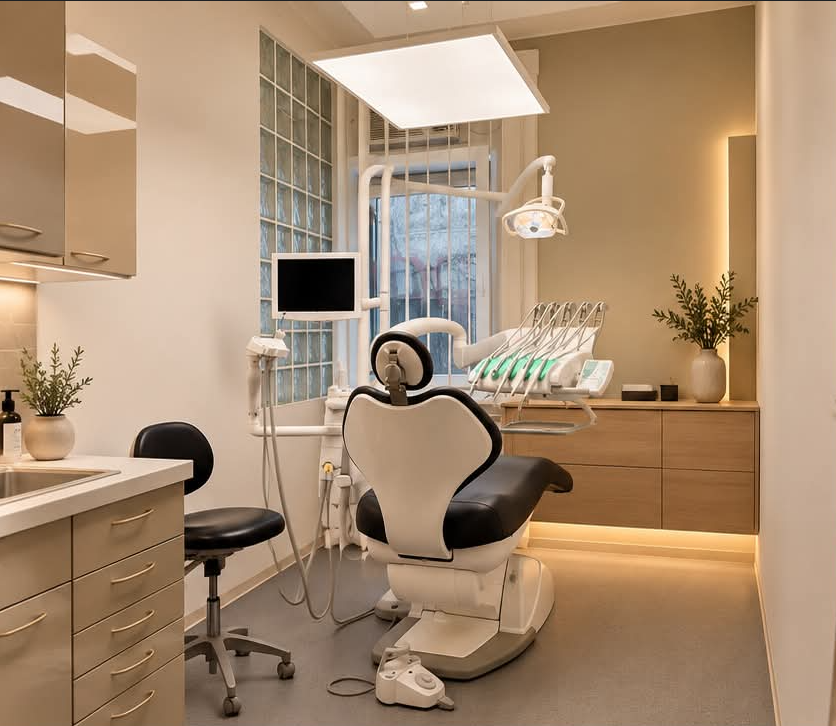
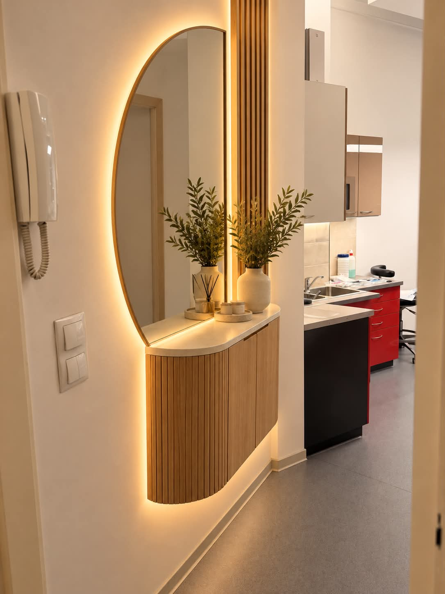
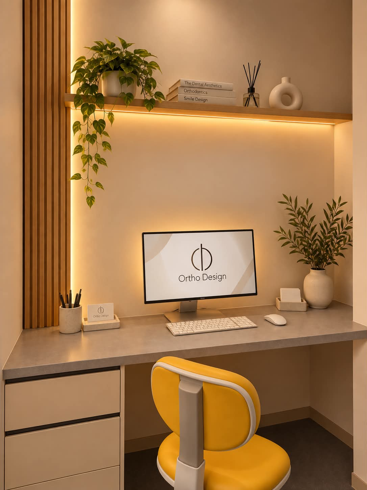
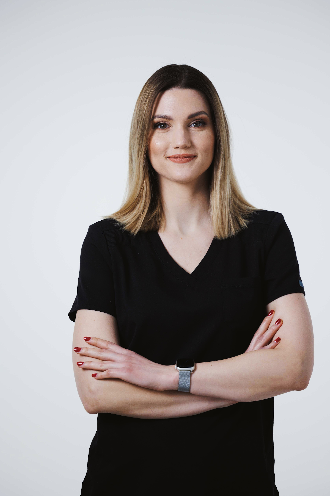
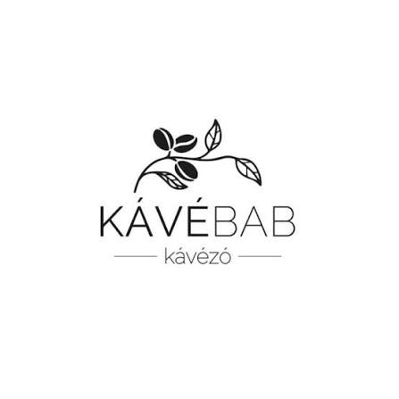

Nálunk fontos, hogy jól érezd magad, és minden kezelés valóban rólad szóljon. Modern szemlélettel, személyes figyelemmel és családias környezetben segítünk abban, hogy mosolyod egészséges és természetesen szép legyen.

Célunk, hogy a fogászati kezelés ne stresszforrás, hanem egy pozitív élmény legyen. Rendelőnk kialakításakor a nyugalom és az elegancia volt a fő szempont.
A legmodernebb technológiával felszerelt kezelőinkben Dr. Ceglédi Laura és csapata személyre szabott, fájdalommentes ellátást biztosít minden páciens számára.



fogszabályzó szakorvos
Tudjuk, hogy a hosszabb kezelések vagy nagyobb munkafolyamatok alatt jól esik a türelmes várakozás egy kellemes helyen. Ezért minden kísérőt vendégül látunk egy frissítő kávéra a szomszédos Kávébab kávézóban, ameddig a te új mosolyod készül nálunk!

Pillanatképek a rendelő mindennapjaiból, esztétikai eredmények és hasznos fogászati tippek.
Modern, átlátszó sínes (aligner) rendszerek, amelyek kényelmesen és észrevétlenül igazítják tökéletesre a mosolyát.
Professzionális fogfehérítés, direkt héjak és porcelán héjak az önbizalommal teli, ragyogó mosolyért.
Fájdalommentes tömések, gyökérkezelések és állapotfelmérés a fogak egészségének hosszú távú megőrzéséért.
Kérjen időpontot állapotfelmérésre, és tegye meg az első lépést a tökéletes mosoly felé.
Időpontot foglalok WhatsAppon